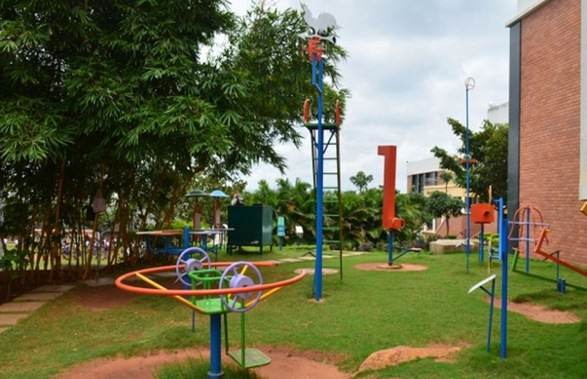

Science Park
Science Park is nothing but a cluster of open air Science gadgets all meant for play way learning of Science. Science Park is an innovative concept of teaching Science in an informal way. The basic concept of Science park lies on the tendency of the children to play more than to read.
